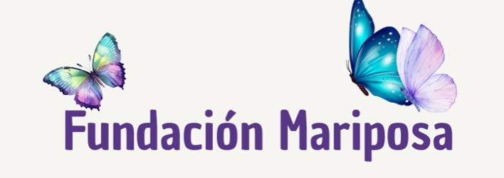

Mensen dichter bij elkaar brengen
Stichting Verbinding ondersteunt jongeren, volwassenen en gezinnen met trainingen die zelfvertrouwen, sociale vaardigheden en onderling begrip versterken. Geen quick fix, maar aandacht die blijft hangen.

Wij geloven dat mensen sterker worden wanneer ze zich gezien en gehoord voelen — en dat verbinding met anderen daar de sleutel toe is.
Stichting Verbinding is opgericht vanuit de overtuiging dat sociale vaardigheden niet vanzelfsprekend zijn, maar wel te leren. Met onze trainingen, workshops en begeleidingstrajecten helpen we mensen van alle leeftijden om steviger in het leven te staan, grenzen aan te geven en betekenisvolle relaties op te bouwen.
We werken vanuit een klein, betrokken team en met vrijwilligers uit de gemeenschap. Onze aanpak is praktisch, laagdrempelig en altijd op maat van de deelnemer.
Onze aanpak rust op drie pijlers: persoonlijke aandacht, een veilige leeromgeving en de overtuiging dat iedereen verder kan groeien.
Trainingen
Elke training is opgebouwd rond een concrete vaardigheid en wordt begeleid door ervaren trainers.
Het team
Een klein team met een gedeelde overtuiging: iedereen kan groeien met de juiste aandacht.
Richtte de stichting op vanuit jarenlange ervaring in het begeleiden van jongeren en gezinnen. Meer details volgen.
Stelt het trainingsaanbod samen en begeleidt nieuwe trainers bij de start.
Begeleidt individuele trajecten en is het eerste aanspreekpunt voor deelnemers.
Werft en begeleidt vrijwilligers en zorgt dat iedereen goed voorbereid aan de slag gaat.
Neem contact op
Heb je een vraag over een training, wil je je aanmelden als vrijwilliger, of wil je de stichting steunen? Laat het ons weten.